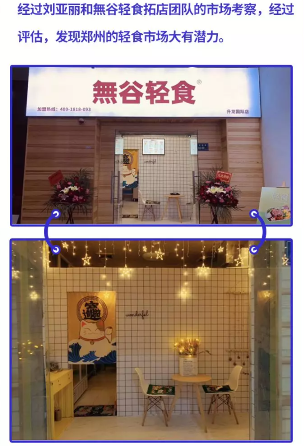
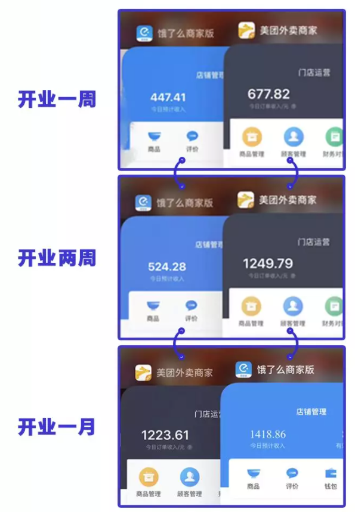
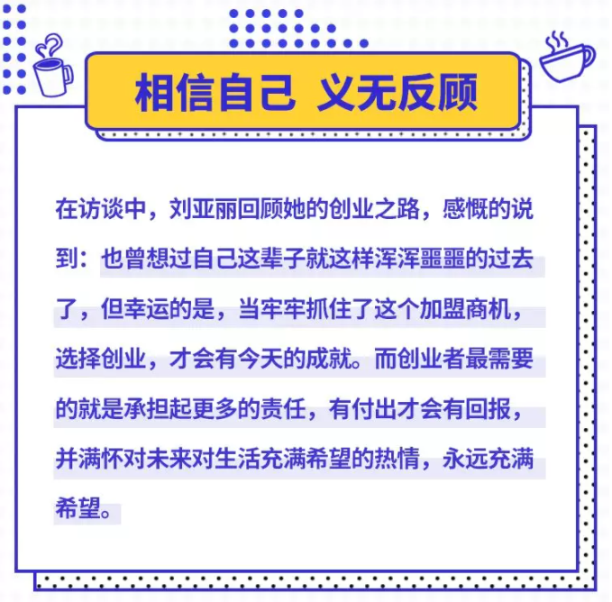
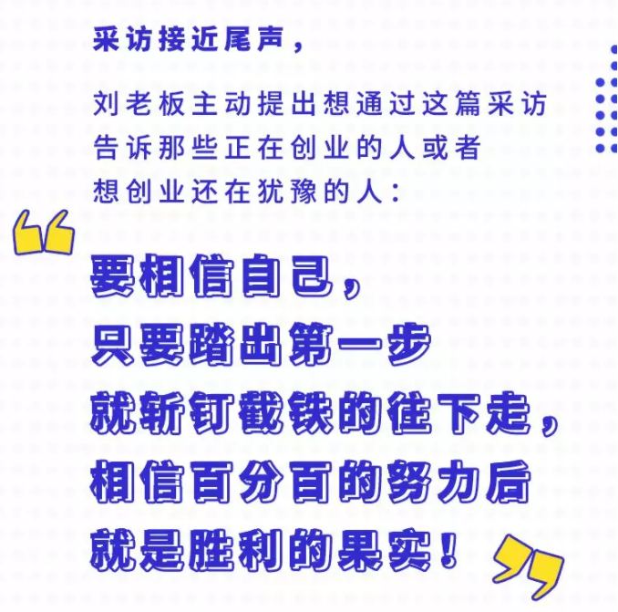

- 1
- 2

 合作条件
合作条件
 加盟流程
加盟流程
 服务支持
服务支持
 品牌优势
品牌优势
-
無谷Report|“寒冬期”创业，仍有每单必争的底气
-
刘亚丽虽是河南人，但却是在武汉长大的，也算半个的“武汉伢”，2015年从大学毕业之后，即投身广告设计行业，成为一名标准的996加班族。据她说，当时在办公室加班吃外卖变成了家常便饭，由于无谷轻食产品很棒，也比较健康，更是她加班时最爱点的外卖之一。
也许是缘分，刘亚丽碰巧看到了无谷轻食的店长招聘。“因为我对这个品牌太熟了，再加上我当时真的不想再继续过996的格子间生活，所以我决定加入无谷轻食，当一次店长，感受一下管理一家店是什么感觉。”
就这样，刘亚丽在无谷轻食做了几个月店长，在接触到公司后台的一些数据反馈，以及让人放心的产品，还有公司对加盟商耐心负责的态度之后，以及这段时间内的感受，让她下定决心加盟无谷轻食，做自己的老板，主宰自己的人生！

经过精心筹备，在2019年11月8日，郑州首家无谷轻食在升龙国际广场正式开张。
单枪匹马的她来到一个陌生的城市开店，前期遇到的问题不算少，无谷轻食的总部团队也在时时刻刻支撑她并给予她解决方案，各类问题也都迎刃而解。而唯一最大的问题就是，自己内心害怕无谷轻食不适合河南郑州这个市场，好在有公司总部的扶持，以及老板和家人给予的鼓励与关心，用心解答提出的每一个问题，让她在沟通完心里舒坦许多。
北方的冬天尤为的冷，而开业时正好是冬天，算是轻食行业的淡季，刘亚丽也担心单量会受影响，好在开业后的每一天都在保持进步，第1天10单、第2天20多单、第3天30多单...单量一直上涨的趋势！渐渐的，她心里的大石头慢慢的放下了，看着单量日渐上升，之前的担忧与顾虑早已荡然无存了。刘亚丽终于品尝到了创业成功的喜悦，也坚定了创业的信心！
其实，经营店铺的过程非常的辛苦，采购、点单、收银、擦桌椅等事情刘亚丽都是亲自上阵，每天都累到不想吃饭的她，都会定时收到家人的叮嘱与督促，但创业的激情与责任顽强的支撑她坚持下去。开店大半个月后的一天，单量首次破百，而她内心却很平静。


